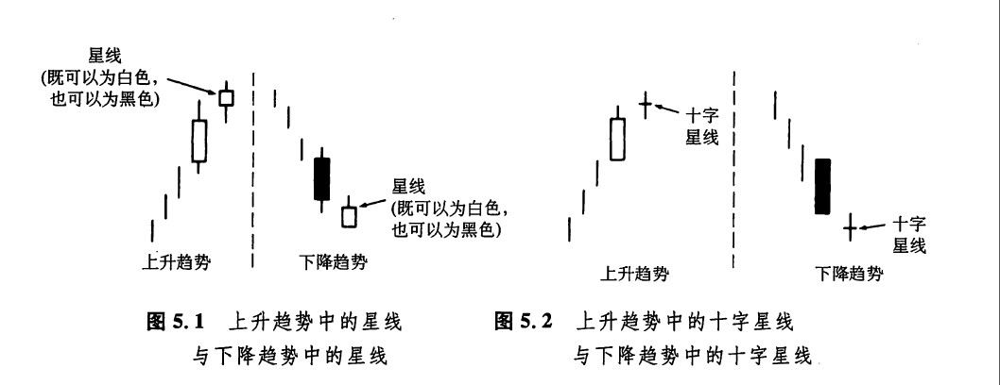

“天下没有填得饱的胃口”
本章要讨论另一群有趣的反转形态，它们的共同点是都包含星蜡烛线。如图5.1所示，星蜡烛线（简称星线）的实体较小，并且在它的实体与它前面的较大的蜡烛线的实体之间形成了价格跳空。只要星线的实体与前一个实体没有任何重叠，那么这个星蜡烛线就是成立的。星线本身的颜色并不重要。星线既可能出现在市场的顶部，也可能出现在市场的底部（有时候，人们又把下降趋势中的星线称为雨滴）。如果星线的实体已经缩小为十字线，则称之为十字星线（如图5.2所示）。
当星线，尤其是十字星线出现时，就是一个警告信号，表明当前的趋势或许好景不长了。星线的较小的实体显示，熊方和牛方的较量已经转入僵持状态。在强劲的上升趋势中，牛方一直占据主导地位。如果在一根长长的白色蜡烛线之后出现了一根星线，则构成了警告信号：因为市场原来受买方的控制，现在转变为买方与卖方势均力敌的僵持状态。这一僵局的发生，既可能是由于买方力量的衰减所造成的，也可能是由于卖方力量的增长所造成的。但不论出于哪一个原因，星线都能告诉我们，当前上升趋势的驱动力已经瓦解，市场容易遭到卖方的攻击而向下回落。

如果在下降趋势中出现了星线，也是同样的道理，只是方向与上述相反。具体地说，在下降趋势中，如果在一根长长的黑色蜡烛线之后出现了星线，就反映出市场氛围的改变。举例而言，在下降趋势中，熊方一直占据主动，但是随着星线的出现，事情就发生了变化，此时，牛、熊双方的力量对比已经变得较为平衡了。如此一来，市场向下的能量也就减退了。这种局面当然不利于熊市的继续发展。
在下列4种反转形态中，星线都是其中的一项重要组成成分。这四种反转形态分别是：
1.黄昏星形态；
2.启明星形态；
3.十字星形态；
4.流星形态。
在这4种星形态中，星线实体的颜色都是无关紧要的，既可以是白色的，也可以是黑色的。
下一篇：启明星形态
上一篇：剌透形态（斩回线形态）